إزاي تشغله، وتستخدمه كولي أمر أو كمدرس، وتعمل إيه لو حاجة مش شغالة.How to start it, how to use it as a parent or a teacher, and what to do when something is not working.
أثر في سطرين
أثر بيحتفظ بنتائج الطالب سنة ورا سنة، وبيوضح هو كويس في إيه، ومحتاج مساعدة في إيه، والصعوبة ممكن تكون بدأت منين. هو برنامج واحد له جانبين: جانب لولي الأمر، وجانب للمدرس والمدرسة.
كل حاجة بتشتغل على الكمبيوتر ده. مفيش حساب عند أي شركة، ومفيش حاجة بتتبعت على الإنترنت، وبيشتغل من غير إنترنت.
دي نسخة مبكرة. الأسماء والسجلات اللي جاية مع البرنامج كلها مش حقيقية. المنهج اللي جواه مسودة لسه محتاجة مراجعة مدرسين.
شوف أثر في دقيقتين
الفيديوهين بالإنجليزي، وكل اللي على الشاشة بيانات مش حقيقية.
لولي الأمر
للمدرس
التشغيل
دوس كليك يمين على ملف الـ zip واختار Extract All. فكه في مكان عادي زي Desktop أو Documents. ما تشغلوش من جوه الـ zip، وما تحطوش في Program Files. الفك بياخد كام دقيقة عشان الملف كبير.
افتح الفولدر ودوس مرتين على Start Athar.
لو ويندوز قال Windows protected your PC، دوس More info وبعدين Run anyway. ده بيحصل أول مرة بس، عشان البرنامج مش موقّع.
هتفتح شاشة سودا، وبعد شوية المتصفح هيفتح أثر على العنوان http://127.0.0.1:8780.
سيب الشاشة السودا مفتوحة طول ما إنت بتستخدم أثر. عشان تقفله، اقفلها أو دوس مرتين على Stop Athar.
أول مرة، أثر بيسأل مين اللي هيستخدمه. اختار أنا ولي أمر أو أنا مدرس أو بشتغل في مدرسة. تقدر تغير ده بعدين من الإعدادات.
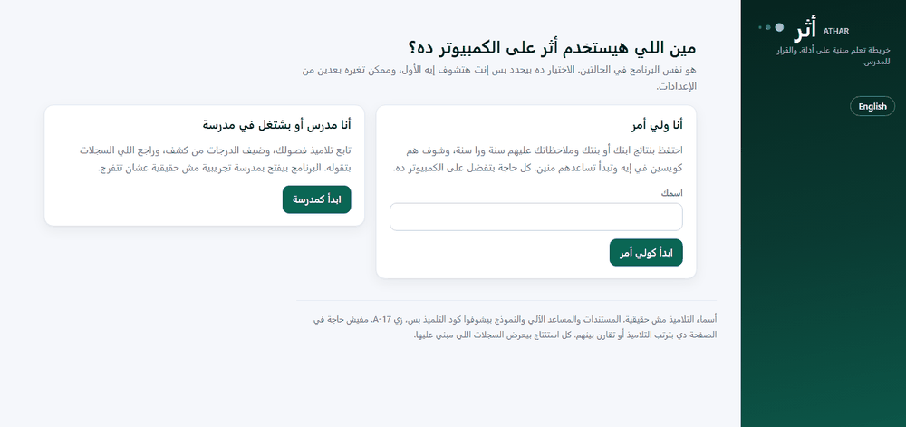
أول تشغيل. نفس البرنامج في الحالتين.
الكمبيوتر محتاج إيه
ويندوز 10 أو 11، 64-bit.
حوالي 8 جيجا مساحة فاضية.
للمساعد: 16 جيجا رام مريحة. بكارت شاشة قراءة الورقة بتاخد حوالي دقيقة، ومن غيره ممكن تاخد كذا دقيقة.
عشان تشيل أثر، امسح الفولدر. مفيش حاجة تانية اتغيرت على الكمبيوتر.
لولي الأمر
خمس دقايق وتبقى جاهز.
1. اكتب اسمك وضيف أولادك
اختار أنا ولي أمر واكتب اسمك. بعدها لكل طفل اكتب الاسم الأول واختار الصف اللي هو فيه دلوقتي ودوس ضيف الطفل ده. ضيف كل أولادك، وكل واحد له صفحته. مفيش كلمة سر ولا حساب للطفل، والطفل بيتنقل للصف اللي بعده لوحده كل سنة.
أسماء أولادك في القايمة الجانبية. دوس على الاسم عشان تشوف الطفل ده، و«ضيف طفل كمان» تحت القايمة.
عايز تتفرج الأول؟ دوس ضيف طفلين تجريبيين عشان تتفرج. عندهم نتائج 3 سنين مش حقيقية، وتقدر تشيلهم في أي وقت.
2. ضيف نتيجة
النتيجة هي اختبار أو امتحان أو واجب. أثر محتاج يعرف كل جزء في الورقة كان عن إيه، عشان المجموع لوحده مش بيوضح الصعوبة فين. عندك طريقتين:
صورة: افرد الورقة المتصححة في إضاءة كويسة وصورها من فوق على طول. أثر بيقرا الدرجات ويملا السطور. راجع كل سطر على الورقة، وعلّم على راجعت كل سطر على الورقة، ودوس احفظ النتائج دي. مفيش حاجة بتتحفظ قبل ما تعلّم.
كتابة: اختار المادة والصف والترم والسنة، ولكل جزء اختار الموضوع واكتب الدرجة والدرجة من كام.
صورة ورقة، أو كتابة الدرجات، أو ملاحظة بكلامك. تحت مربع الصورة فيه ورق تجريبي تجرب بيه.
أثر بيقرا الصورة الواضحة المستقيمة كويس. في الصورة الضلمة أو المايلة بيغلط ومش بيقول إنه مش متأكد، وعشان كده المراجعة عليك. قراءة خط اليد الحقيقي لسه ما اتجربتش كفاية. الصورة مش بتتحفظ ومش بتطلع من الكمبيوتر.
ورق السنين اللي فاتت مهم: كل ما النتائج ترجع لورا أكتر، أثر يقدر يوضح أكتر.
3. اقرا الصفحة الرئيسية
لما الطفل يبقى عنده حوالي 6 درجات، صفحة ابني / بنتي بتعرض: ماشي كويس في إيه، تبدأ تساعد منين، اللي جاي السنة دي، وأسئلة ممكن تسألها للمدرس.
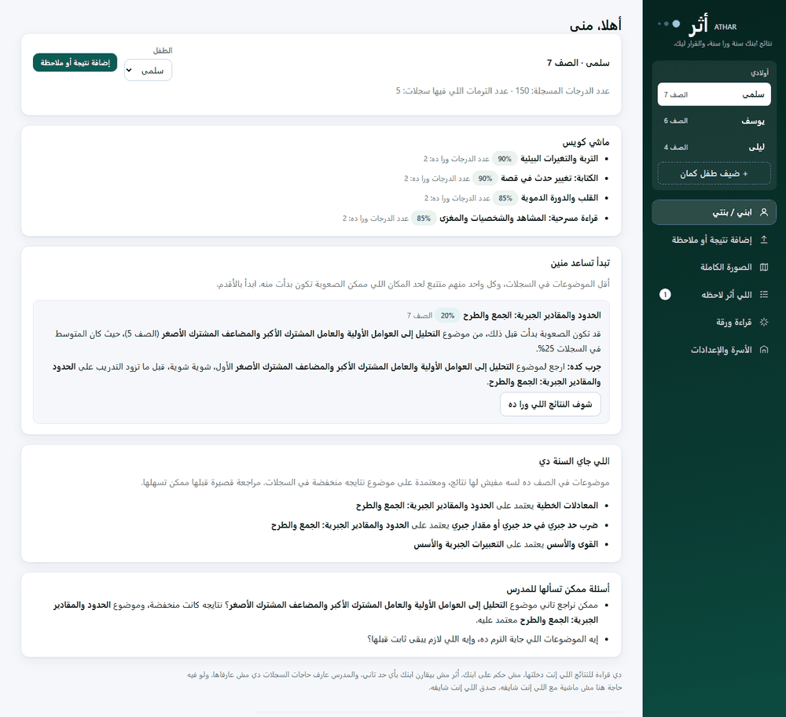
«تبدأ تساعد منين» بيرجع بالصعوبة للموضوع الأقدم اللي ممكن تكون بدأت منه. ابدأ بالأقدم.لو الدرجات أقل من 6، أثر بيقول إن السجلات لسه قليلة ومش بيقول حاجة تانية.
4. اللي أثر لاحظه
أثر بيعرض ملاحظاته ومعاها السجلات اللي مبنية عليها. إنت اللي بتقرر: خلي اللي ماشي مع اللي إنت شايفه في البيت، وارفض اللي مش ماشي. مفيش حاجة بتتستخدم قبل ما تقرر.
كل ملاحظة تحتها الدرجات اللي مبنية عليها، سطر سطر.
5. الصورة الكاملة
الصورة الكاملة بتعرض كل اللي متسجل عن الطفل: المواد، والمهارات، وخريطة المنهج اللي بتوضح كل موضوع معتمد على إيه.
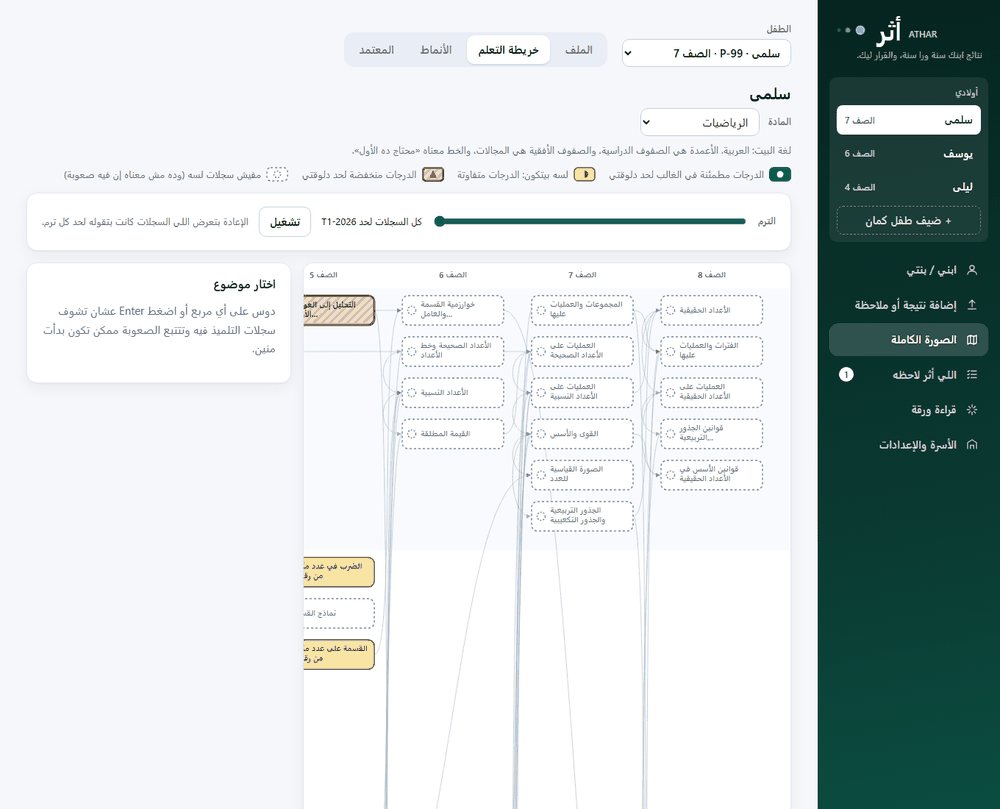
خريطة التعلم. دوس على أي موضوع عشان تشوف درجاته وترجع للي قبله.
أثر مش بيقارن ابنك بأي حد أبدا. هو بيقرا النتائج اللي إنت دخلتها بس، والمدرس عارف حاجات النتائج دي مش عارفاها. لو فيه حاجة هنا مش ماشية مع اللي إنت شايفه، صدق اللي إنت شايفه.
للمدرس والمدرسة
جانب المدرسة بيفتح بمدرسة مش حقيقية: 40 طالب من الصف الرابع للصف الثاني الإعدادي، ومدرسينهم، وسجلات كذا سنة. جرب عليها براحتك.
1. نظرة على الفصل والمدرسة
نظرة على الفصل بتعرض عدد السجلات، واللي مستني قرارك، ومتوسط كل مجال في كل صف. خريطة المدرسة بتعرض نفس الصورة بالموضوعات. الصفحتين بيوصفوا الموضوعات، مش الطلاب، ومفيش ترتيب للطلاب في أي مكان.
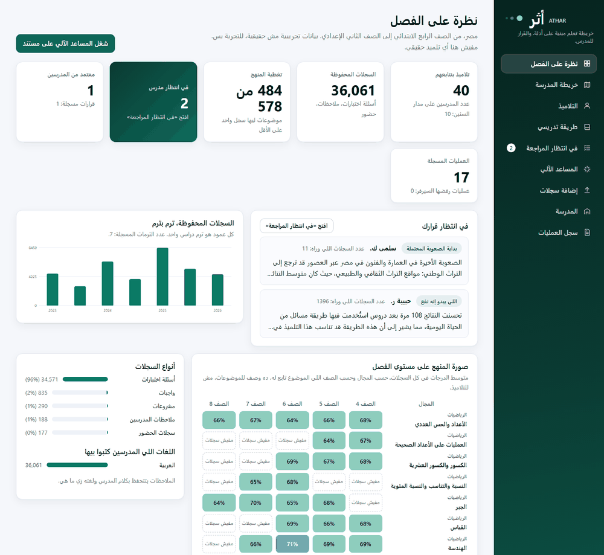
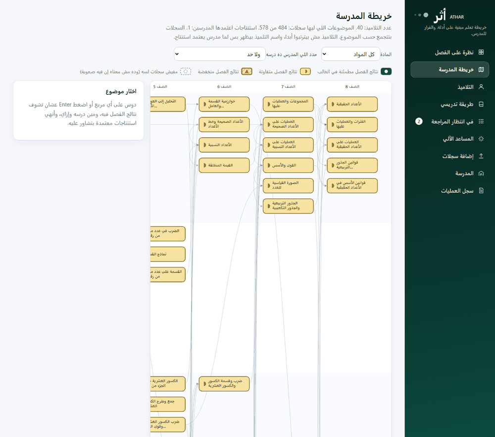
2. طالب واحد
من التلاميذ اختار تلميذ. هتلاقي ملفه، وخريطة التعلم، والأنماط اللي استمرت كذا ترم، واللي اتوافق عليه. في خريطة التعلم دوس على موضوع نتايجه منخفضة وبعدين تتبع البداية عشان تشوف الصعوبة ممكن تكون بدأت منين.
3. في انتظار المراجعة
كل استنتاج بيستنى مدرس باسمه. افتح الاستنتاج وشوف السجلات اللي وراه، وبعدين اختار اعتماد أو تعديل أو رفض. المساعد ما يقدرش يوافق على حاجة. التقرير المطبوع للطالب بيتبني من اللي اتوافق عليه بس.
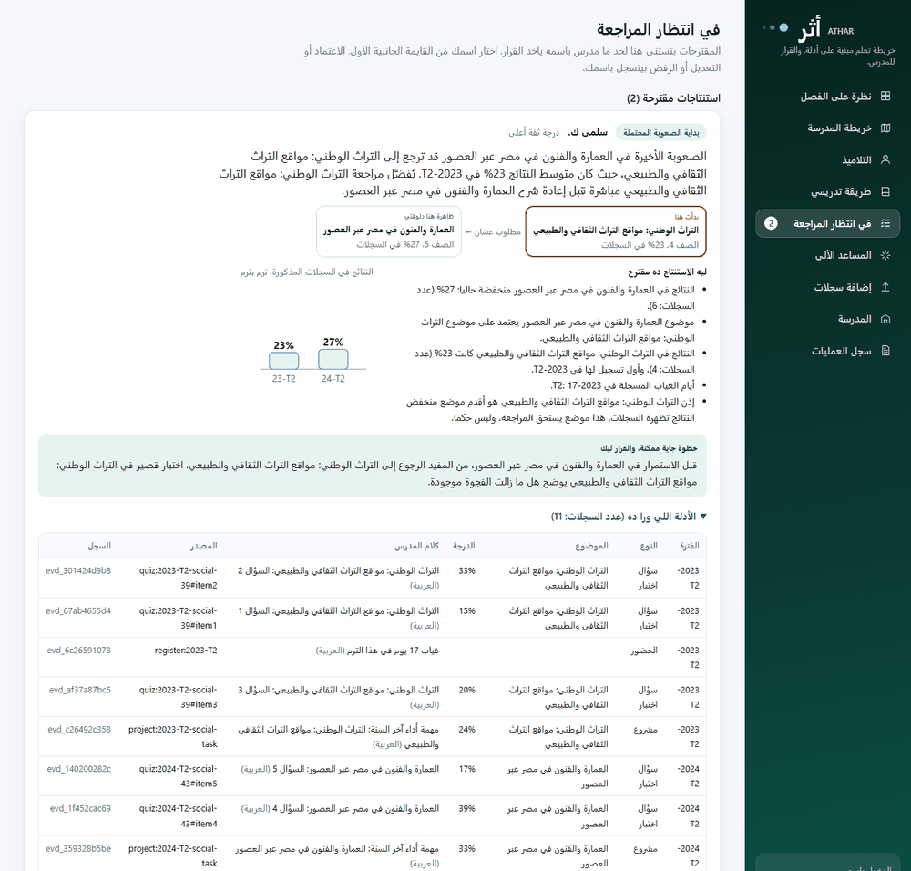
اختار اسمك من «الدخول باسم» قبل ما تقرر، عشان القرار يتسجل باسمك.
4. إضافة سجلات
كشف درجات: نزّل الكشف، املاه بـ Excel، وارفعه. دي الطريقة المضبوطة ومش محتاجة نموذج.
مستند: ورقة اختبار مكتوبة أو ملاحظة مدرس. المساعد بيقراها ويسجل اللي لقاه، وبيقف يسألك لو فيه حاجة مش واضحة.
عشان تضيف طالب جديد، روح صفحة المدرسة واستخدم ضيف تلميذ. كل طالب بياخد كود قصير، والمستندات بتتكتب بالكود مش بالاسم.
5. المساعد الآلي
من صفحة المساعد الآلي شغّله على طالب ومستند. بيقرا، ويشغّل التحليلات، ويقف عند المدرس مرتين. الاستنتاجات نفسها بيطلعها كود عادي، مش النموذج. دي الصفحة الوحيدة اللي محتاجة النموذج.
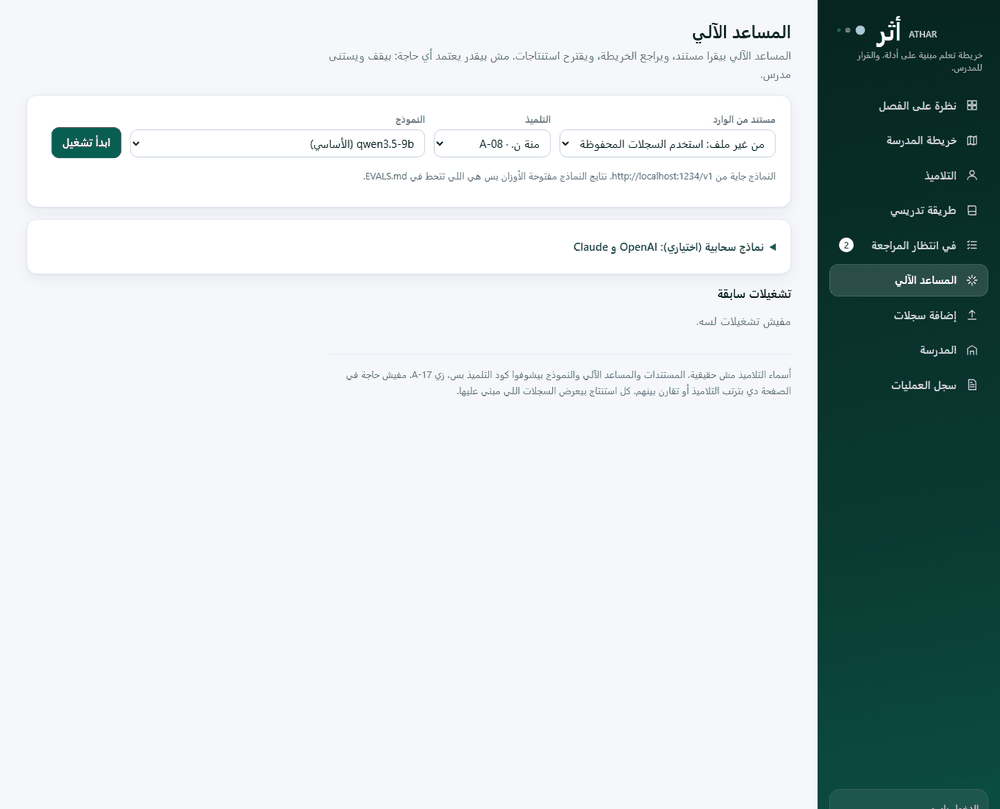
6. المدرسة والدخول
الدخول مقفول في الأول، فأي حد على الكمبيوتر يقدر يفتح أثر. عشان تشغله، افتح صفحة المدرسة واعمل حساب مدير المدرسة. بعدها كل صفحة محتاجة اسم مستخدم وكلمة سر، والمدير بس اللي بيضيف مدرسين، وكل مدرس بيشوف طلاب فصوله بس. سجل العمليات فيه كل حاجة اتعملت ومين عملها.
ما تدخلش بيانات طلاب حقيقية دلوقتي. أثر لسه ما اتجربش مع مدرس حقيقي أو طالب حقيقي.
7. الإضافة للمنهج
أثر جاي بالمنهج المصري من الصف 4 للصف 8. من صفحة المدرسة، تحت المنهج، تقدر تضيف موضوعات لصف تاني أو مادة تانية.
اختار المادة والصف والترم.
اكتب الموضوعات، كل موضوع في سطر. أو ارفع صفحة الفهرس بتاعة الكتاب: ملف نصي أو وورد أو إكسل، أو صورة. ولو الكتاب PDF، خد لقطة شاشة لصفحة الفهرس.
علّم على خلي النموذج يقراها لو عايز النموذج يكتب الموضوعات ويقترح أنهي موضوع محتاج أنهي. ده بياخد حوالي دقيقة.
دوس اعمل مسودة.
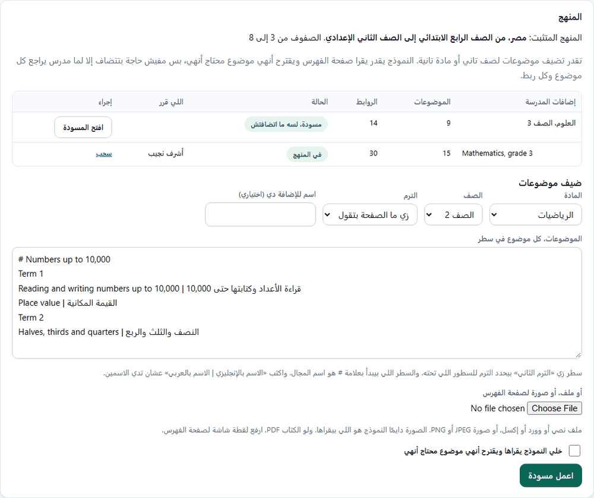
اللي المدرسة ضافته فوق، ونموذج الإضافة تحته.
راجع المسودة. كل موضوع بيظهر باسمه باللغتين، وصفه وترمه ومجاله، والموضوعات اللي محتاجها قبله، والموضوعات اللي بعده ومحتاجاه. صلّح الأسماء، وشيل كل ربط مش موافق عليه، وضيف اللي ناقص. وبعدين علّم على راجعت كل موضوع وكل ربط ودوس اعتماد وإضافة للمنهج.
مفيش حاجة بتدخل المنهج قبل ما مدرس باسمه يعتمدها.
النموذج بيقرا أسماء الموضوعات كويس، لكن الروابط اللي بيقترحها بعضها بيكون غلط. الربط الغلط بيودي المدرس أو ولي الأمر لمكان غلط يبدأ منه المساعدة، فمراجعتك هي الضمان. الإضافة ينفع تتسحب طول ما مفيش سجل بيستخدم موضوعاتها. وأولياء الأمور ما يقدروش يضيفوا للمنهج.
المساعد (النموذج)
النسخة الكاملة جواها نموذج مفتوح بيشتغل على الكمبيوتر ده. مش محتاج تنزل أي برنامج تاني، ومفيش حاجة بتطلع من الكمبيوتر.
اللي محتاج النموذج: قراءة صورة ورقة، وصفحة قراءة ورقة أو المساعد الآلي.
اللي مش محتاجه: كل حاجة تانية.
بعد ما تشغّل أثر، استنى دقيقة لحد ما النموذج يجهز.
لو نسختك من غير النموذج، الشاشة السودا هتعرض عليك تنزله أول مرة: ملفين حجمهم 6.1 جيجا. دوس Enter واستنى. ده بيتعمل مرة واحدة. ولو قلت لأ، دوس مرتين بعدين على Download the model في فولدر أثر.
لو حاجة مش شغالة
اللي حصل
اعمل إيه
جوجل درايف بيقول إنه مش قادر يفحص الملف من الفيروسات
ده طبيعي مع أي ملف كبير. دوس Download anyway.
ويندوز بيقول Windows protected your PC
دوس More info وبعدين Run anyway.
دوست على Start Athar ومفيش حاجة حصلت
اتأكد إنك فكيت الـ zip كله وبتشغل من الفولدر اللي اتفك، مش من جوه الـ zip.
المتصفح ما فتحش
اكتب http://127.0.0.1:8780 في المتصفح. العنوان المضبوط مكتوب في الشاشة السودا.
الصفحة بتقول إنها مش قادرة توصل
الشاشة السودا اتقفلت. دوس مرتين على Start Athar تاني.
أول تشغيل بطيء
برنامج الحماية بيفحص الملفات أول مرة. استنى، المرات الجاية أسرع.
الصفحة بتقول إن النموذج مش جاهز
استنى دقيقة بعد التشغيل. لو فضل كده، بص في فولدر logs. باقي أثر بيشتغل من غير النموذج.
قراءة الصورة غلط
صور تاني في إضاءة أحسن ومن فوق على طول، أو صحح السطور بإيدك قبل الحفظ، أو اكتب الدرجات.
قراءة الورقة بطيئة جدا
الكمبيوتر من غير كارت شاشة أو الرام قليلة. اكتب الدرجات بإيدك، دي مش محتاجة نموذج.
مش لاقي إزاي أضيف طفل
افتح الأسرة والإعدادات، أو دوس + ضيف طفل كمان تحت قايمة الأولاد.
اخترت ولي أمر وأنا مدرس، أو العكس
افتح الأسرة والإعدادات أو المدرسة ودوس روح لجانب المدرسة أو روح لجانب الأسرة. السجلات بتفضل مكانها.
عايز أبدأ من الأول
اقفل أثر وامسح فولدر data. ده بيمسح كل اللي ضفته والحسابات، فاعمل نسخة احتياطية الأول لو محتاجها.
الحفاظ على السجلات
كل السجلات في ملف واحد جوه فولدر data. من الإعدادات دوس اعمل نسخة احتياطية دلوقتي واحفظ نسخة على فلاشة كل فترة. لو الكمبيوتر ضاع، السجلات بتضيع معاه.
تقدر تحفظ ملف طالب واحد كله كملف، أو تمسحه نهائيا، من نفس الصفحة.
عشان تنقل أثر لكمبيوتر تاني، اقفله وانسخ الفولدر كله.
أثر بيسمع على الكمبيوتر ده بس. أي كمبيوتر تاني على الشبكة ما يقدرش يفتحه.
على جانب ولي الأمر مفيش كلمة سر، فأي حد بيستخدم الكمبيوتر يقدر يفتح أثر. استخدم حسابات ويندوز لو ده يهمك.
Athar in two lines
Athar keeps a learner's results from year to year and shows where they are doing well, where they need help, and where a difficulty may have started. It is one program with two sides: one for a parent, one for a teacher and a school.
Everything runs on this computer. There is no account with any company, nothing is sent over the internet, and it works with no internet.
This is an early version. The names and records that come with it are all made up. The curriculum inside is a draft that teachers still need to review.
See Athar in two minutes
Both videos are narrated in English. Everything on screen is made-up data.
For parents
For teachers
Starting
Right-click the zip file and choose Extract All. Extract it to a normal place such as Desktop or Documents. Do not run it from inside the zip, and do not put it in Program Files. Extracting takes a few minutes because the file is large.
Open the folder and double-click Start Athar.
If Windows says Windows protected your PC, click More info, then Run anyway. This happens the first time only, because the program is not signed.
A black window opens and, after a short wait, your browser opens Athar at http://127.0.0.1:8780.
Keep the black window open while you use Athar. To stop, close it or double-click Stop Athar.
The first time, Athar asks who is using it. Choose I am a parent or I am a teacher or I work in a school. You can change this later in the settings.
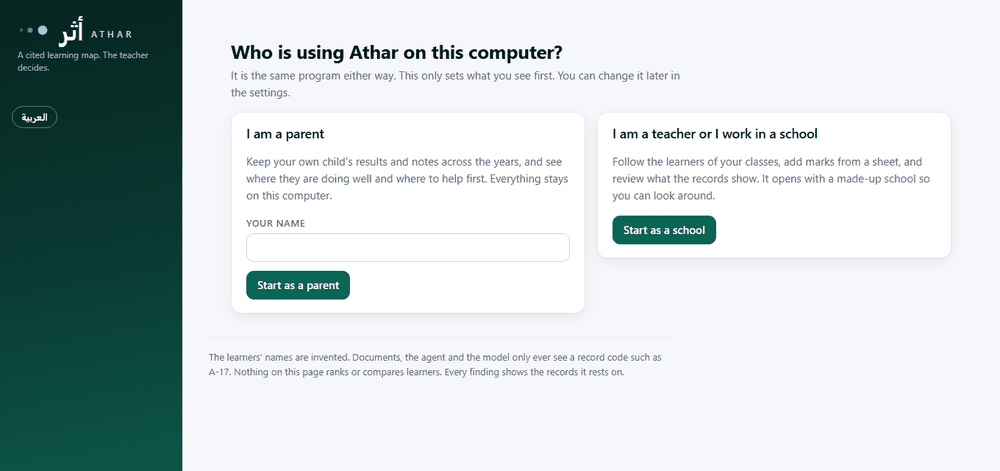
First start. It is the same program either way.
What the computer needs
Windows 10 or 11, 64-bit.
About 8 GB of free disk space.
For the assistant: 16 GB of memory is comfortable. With a graphics card, reading a paper takes about a minute. Without one it can take several minutes.
To remove Athar, delete the folder. Nothing else on the computer was changed.
For parents
Five minutes and you are set up.
1. Type your name and add your children
Choose I am a parent and type your name. Then, for each child, type a first name, choose the grade they are in now, and press Add this child. Add all your children; each one gets their own page. There is no password and no account for a child, and a child moves up a grade by themselves each year.
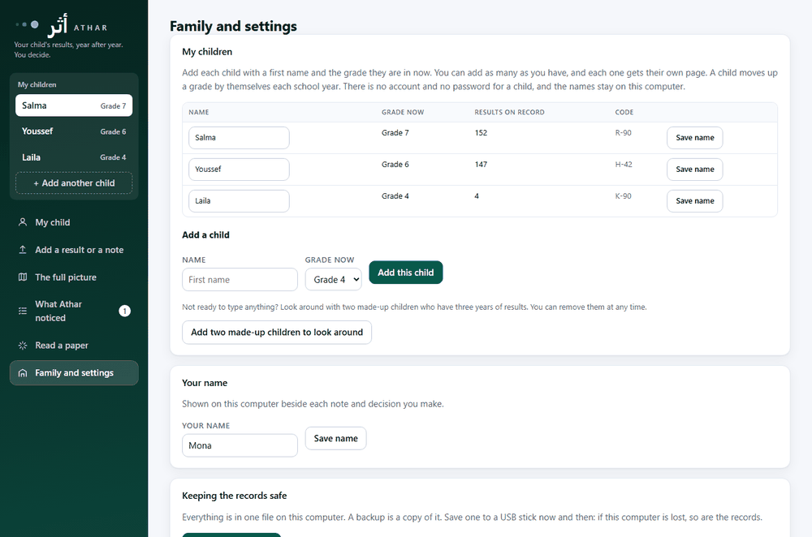
Your children are listed in the side panel. Click a name to see that child. "Add another child" is under the list.
Want to look around first? Press Add two made-up children to look around. They have three years of invented results, and you can remove them at any time.
2. Add a result
A result is a test, an exam or a piece of homework. Athar needs to know what each part of the paper was about, because a total alone cannot show where the difficulty is. There are two ways:
A photo: lay the marked paper flat in good light and take the photo straight from above. Athar reads the marks and fills in the lines. Check every line against the paper, tick I checked every line against the paper, and press Save these results. Nothing is saved before you tick the box.
Typing: choose the subject, the grade, the term and the year. For each part, choose the topic and type the mark and what it was out of.
A photo of a paper, typed marks, or a note in your own words. Under the photo box there are made-up papers to try it with.
Athar reads a clear, straight photo well. On a dim or tilted photo it makes mistakes and does not say when it is unsure, which is why the check is yours. Real handwriting has not been tested enough yet. The photo is not kept and never leaves the computer.
Papers from earlier years are worth adding: the further back the results go, the more Athar can tell.
3. Read the home page
Once a child has about six marks, My child shows what is going well, where to help first, what is coming up this year, and questions you could ask the teacher.
"Where to help first" follows a difficulty back to the earlier topic where it may have started. Start with the earliest one.With fewer than six marks, Athar says there is too little to tell and says nothing else.
4. What Athar noticed
Athar shows what it noticed, with the records behind it. You decide: keep what matches what you see at home, and reject what does not. Nothing is used until you decide.
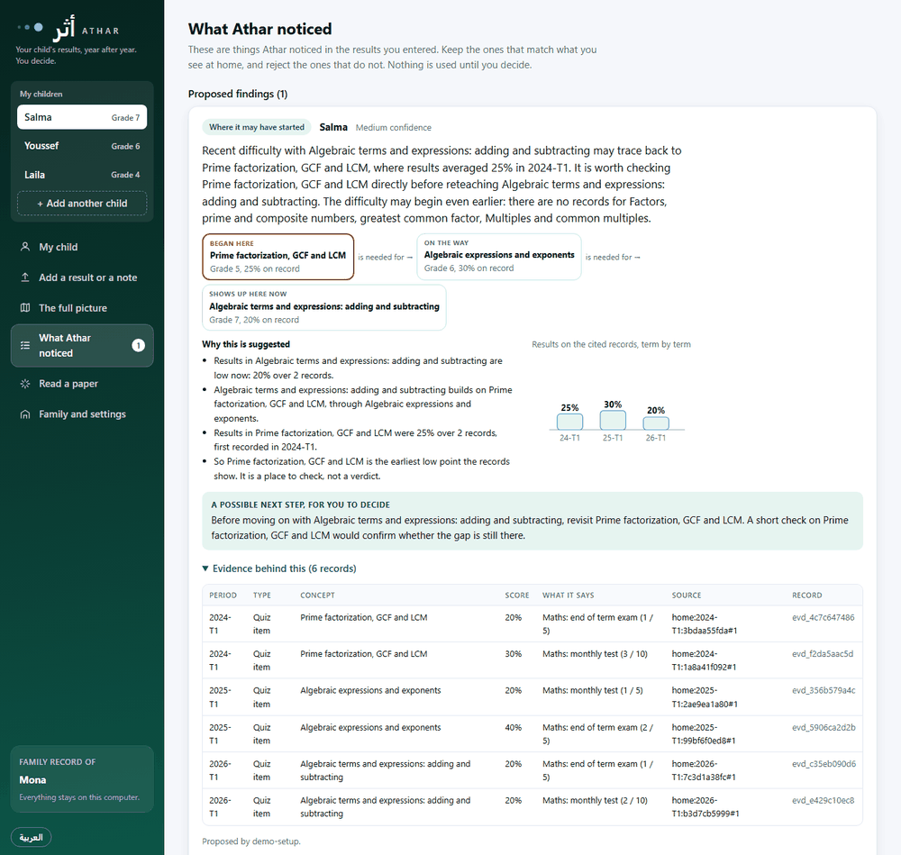
Under each finding are the marks it rests on, line by line.
5. The full picture
The full picture shows everything on record for a child: subjects, skills, and the curriculum map that shows which topic builds on which.
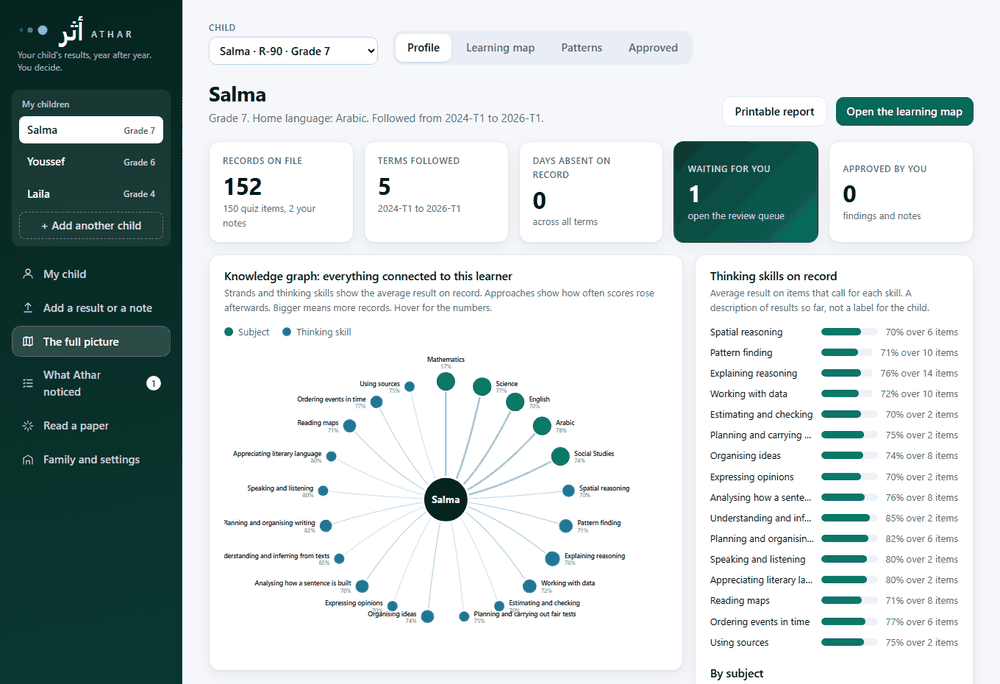
The learning map. Click any topic to see its marks and to trace back to the topics before it.
Athar never compares your child with anyone. It reads only the results you entered, and the teacher knows things these results do not. If something here does not match what you see, trust what you see.
For teachers and schools
The school side opens with a made-up school: 40 learners from Primary 4 to Preparatory 2, their teachers, and several years of records. Try anything on it.
1. The class and the school at a glance
Class overview shows how many records there are, what is waiting for your decision, and the average for each area in each grade. School map shows the same picture by topic. Both pages describe topics, not learners, and no page ranks learners.
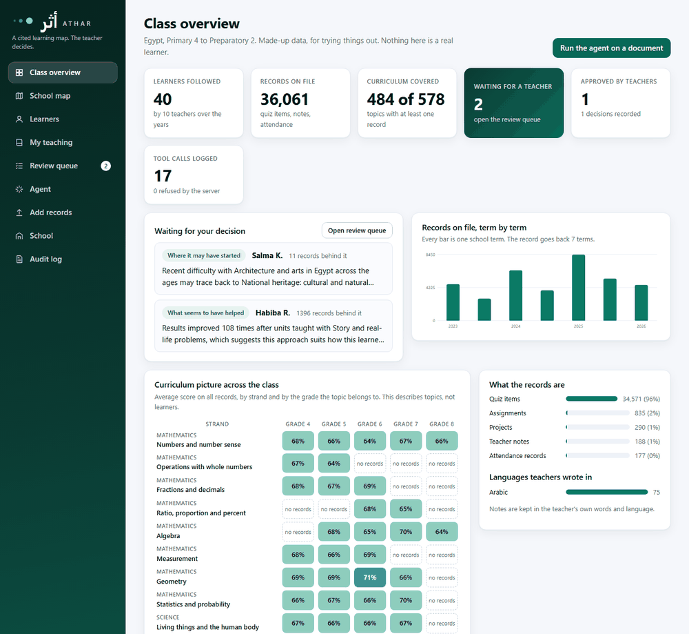
2. One learner
Under Learners, choose a learner. You get their profile, the learning map, the patterns that held over several terms, and what has been approved. On the learning map, click a topic with low results, then Trace back, to see where the difficulty may have started.
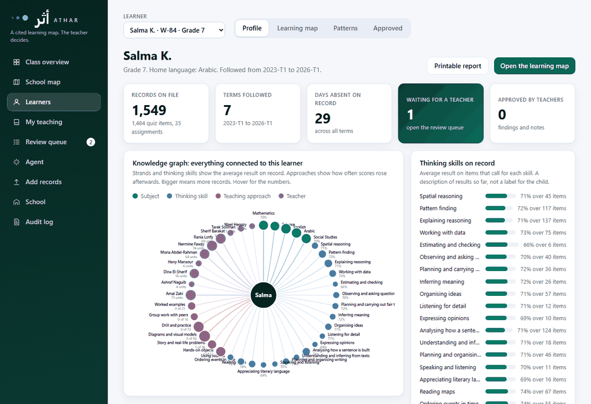
3. The review queue
Every finding waits for a named teacher. Open a finding, look at the records behind it, then approve, edit or reject it. The assistant cannot approve anything. A learner's printable report is built from approved findings only.
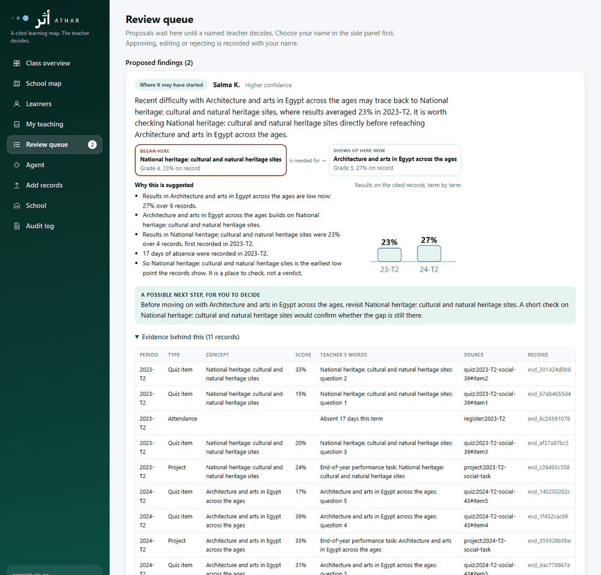
Choose your name under "Signed in as" before you decide, so the decision is recorded under your name.
4. Adding records
A marks sheet: download the sheet, fill it in with Excel, and upload it. This is the exact way and it needs no model.
A document: a typed quiz sheet or a teacher's note. The assistant reads it and records what it finds, and stops to ask you when something is unclear.
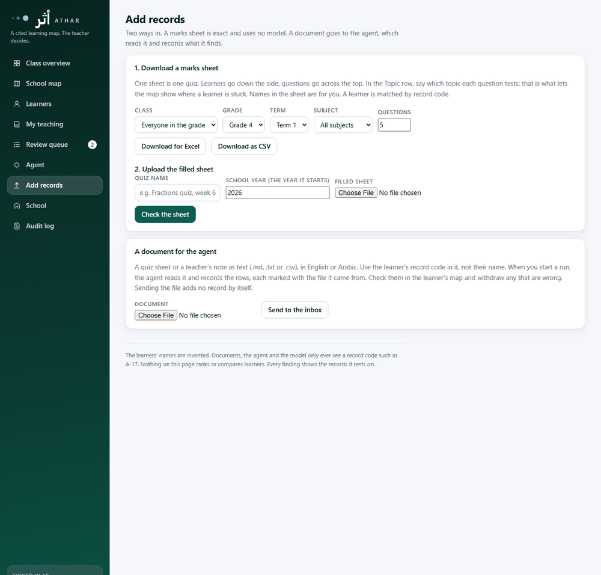
To add a new learner, open the School page and use Add a learner. Each learner gets a short code, and documents are written with the code, not the name.
5. The agent
On the Agent page, start it on a learner and a document. It reads, runs the analyses, and stops for a teacher twice. The findings themselves are reached by plain code, not by the model. This is the only page on the school side that needs the model.
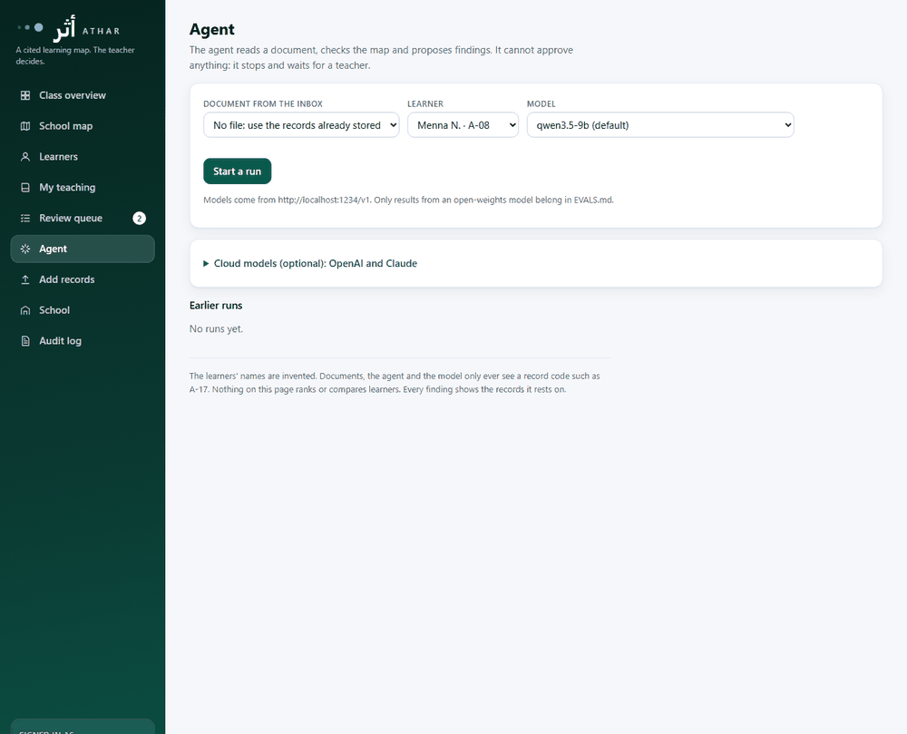
6. The school and sign-in
Sign-in is off at first, so anyone at this computer can open Athar. To turn it on, open the School page and create the school admin. From then on every page needs a username and a password, only the admin adds teachers, and each teacher sees only the learners of their own classes. The Audit log lists every action and who did it.
Do not put real learner data in it yet. Athar has not been used with a real teacher or a real learner.
7. Adding to the curriculum
Athar comes with the Egyptian curriculum for grades 4 to 8. On the School page, under The curriculum, you can add topics for another grade or another subject.
Choose the subject, the grade and the term.
Type the topics, one on each line. Or upload the contents page of the book: a text, Word or Excel file, or a picture. For a PDF, take a screenshot of the contents page.
Tick Let the model read it if you want the model to list the topics and suggest which topic needs which. This takes about a minute.
Press Make a draft.
What the school has added is at the top, and the form to add more is under it.
Check the draft. Every topic shows its name in both languages, its grade, term and area, the topics it needs first, and the later topics that need it. Fix the names, remove every link you do not agree with, and add the ones that are missing. Then tick I checked every topic and every link and press Approve and add to the curriculum.
Nothing enters the curriculum before a named teacher approves it.
The model reads topic names well, but some of the links it suggests are wrong. A wrong link sends a teacher or a parent to the wrong place to start helping, so your check is the safeguard. An addition can be withdrawn as long as no record uses its topics. Parents cannot add to the curriculum.
The assistant (the model)
The full version has an open model inside that runs on this computer. You do not need to install any other program, and nothing leaves the computer.
What needs the model: reading a photo of a paper, and the Read a paper or Agent page.
What does not: everything else.
After starting Athar, wait a minute for the model to be ready.
If your copy came without the model, the black window offers to download it the first time: two files, 6.1 GB in all. Press Enter and wait. You do this once. If you said no, double-click Download the model in the Athar folder later.
If something is not working
What happened
What to do
Google Drive says it cannot scan the file for viruses
This is normal for any large file. Click Download anyway.
Windows says "Windows protected your PC"
Click More info, then Run anyway.
I double-clicked Start Athar and nothing happened
Make sure you extracted the whole zip and are starting it from the extracted folder, not from inside the zip.
The browser did not open
Type http://127.0.0.1:8780 into the browser. The black window shows the exact address.
The page says it cannot connect
The black window was closed. Double-click Start Athar again.
The first start is slow
Your antivirus is checking the files for the first time. Wait; later starts are quicker.
The page says the model is not ready
Wait a minute after starting. If it stays that way, look in the logs folder. The rest of Athar works without the model.
A photo was read wrongly
Take it again in better light, straight from above, or correct the lines by hand before saving, or type the marks.
Reading a paper is very slow
The computer has no graphics card or little memory. Type the marks instead; that needs no model.
I cannot find how to add a child
Open Family and settings, or press + Add another child under the list of children.
I chose parent but I am a teacher, or the other way round
Open Family and settings or School and press the button that switches to the other side. The records stay where they are.
I want to start again from nothing
Stop Athar and delete the data folder. This removes everything you added and the accounts, so make a backup first if you need one.
Keeping records safe
All the records are in one file in the data folder. In the settings, press Make a backup now and save a copy to a USB stick now and then. If this computer is lost, so are the records.
The same page can save one learner's whole record as a file, or delete it for good.
To move Athar to another computer, stop it and copy the whole folder.
Athar listens on this computer only. No other computer on the network can open it.
On the parent side there is no password, so anyone who uses the computer can open Athar. Use Windows user accounts if that matters to you.